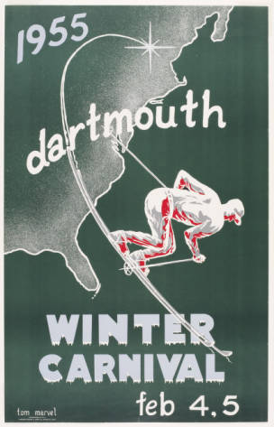
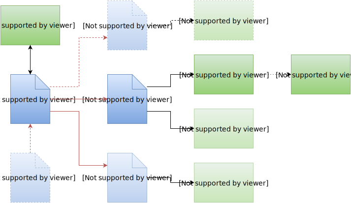
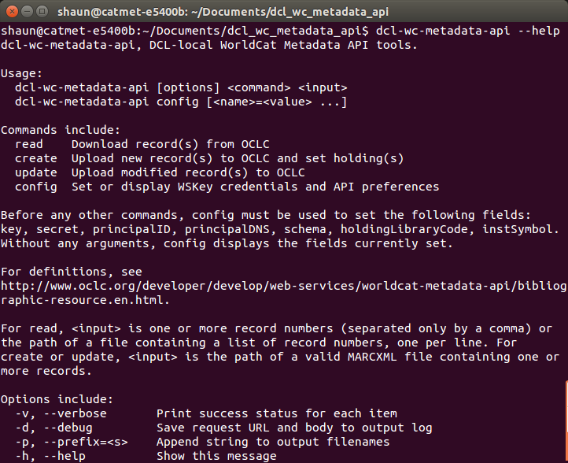
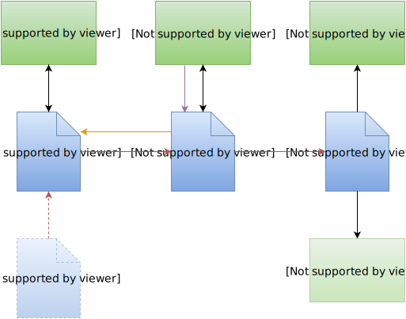

<!doctype html>
<html lang="en">

	<head>
		<meta charset="utf-8">

		<title>From MODS to OCLC through the WorldCat Metadata API</title>

		<meta name="description" content="Presentation at the 2016 ALA Midwinter ALCTS Technical Services Workflow Efficiency Interest Group meeting">
		<meta name="author" content="Shaun Akhtar">

		<meta name="apple-mobile-web-app-capable" content="yes" />
		<meta name="apple-mobile-web-app-status-bar-style" content="black-translucent" />

		<meta name="viewport" content="width=device-width, initial-scale=1.0, maximum-scale=1.0, user-scalable=no, minimal-ui">

    <link href='https://fonts.googleapis.com/css?family=Alegreya+Sans+SC:400,400italic,700,700italic|Inconsolata' rel='stylesheet' type='text/css'>
    
		<link rel="stylesheet" href="reveal.js/css/reveal.css">
		<link rel="stylesheet" href="reveal.js/css/theme/dartmouth.css" id="theme">

		<!-- Code syntax highlighting -->
		<link rel="stylesheet" href="reveal.js/lib/css/zenburn.css">
    
    <!-- Personal styles --> 
    <style type="text/css">
    .reveal h3, .reveal h4, .reveal h5, .reveal h6 {
      text-transform: none;
    }
    </style>

		<!-- Printing and PDF exports -->
		<script>
			var link = document.createElement( 'link' );
			link.rel = 'stylesheet';
			link.type = 'text/css';
			link.href = window.location.search.match( /print-pdf/gi ) ? 'reveal.js/css/print/pdf.css' : 'reveal.js/css/print/paper.css';
			document.getElementsByTagName( 'head' )[0].appendChild( link );
		</script>

		<!--[if lt IE 9]>
		<script src="reveal.js/lib/js/html5shiv.js"></script>
		<![endif]-->
	</head>

	<body>

		<div class="reveal">

			<!-- Any section element inside of this container is displayed as a slide -->
			<div class="slides">
				<section data-markdown data-separator-notes="^Note:">
					<script type="text/template">
            # From MODS to OCLC through the WorldCat Metadata API
            
            
            
            Shaun Akhtar, Dartmouth College Library
            
            ALCTS Technical Services Workflow Efficiency Interest Group
            
            ALA Midwinter 2016<br/>
            <span style="color: #809b55;">@ShaunAkhtar #alamw16</span>
            
            Note:
            Introduction and background
          </script>
				</section>

				<section data-markdown data-separator-notes="^Note:">
					<script type="text/template">
            ## Outline
            
            Our scenario
            
            WorldCat Metadata API overview
            
            Why we wrote new code
            
            Introducing `dcl_wc_metadata_api`
            
            What we've learned
            
            How to test it out
            
            Note:
            These are the topics I hope to cover in today's session.
          </script>
				</section>

				<section data-markdown data-separator-notes="^Note:">
					<script type="text/template">
            ## Starting Point
            
            Metadata created in or transformed into MODS for local digital assets (unique digitized and born-digital material)
            
            Includes new projects and retrospective conversion of metadata for previous projects
            
            Many digital items, a lot of data, limited item-level representation in WorldCat, few OCLC record numbers
            
            Note:
            This is where we are today. MODS is our schema of choice for descriptive metadata about our digital collections and items.
          </script>
				</section>

				<section data-markdown data-separator-notes="^Note:">
					<script type="text/template">
            ## Sample Collection: Dartmouth Winter Carnival Posters
            
            
            
            
            Note:
            Our first test collection for this project is the Dartmouth Winter Carnival Posters, which are associated with an annual on-campus event, and for many years have been created by student artists.
          </script>
				</section>

				<section data-markdown data-separator-notes="^Note:">
					<script type="text/template">
            ## Workflow Goals
            
            Continue creating metadata in MODS
            
            <p class="fragment">Ship records up to WorldCat and into local ILS</p>
            
            <p class="fragment">Merge OCLC numbers into MODS repository</p>
            
            <p class="fragment">Support iterative metadata enhancement</p>
            
            <p class="fragment">Minimize duplication of work</p>
            
            Note:
            There were a number of goals we identified for a prospective workflow involving this metadata.
            
            We use the Oxygen XML Editor, and have a native XML database as our metadata repository for local digital assets.
            
            Like many peer institutions, we have a lot of legacy metadata for our digital collections and items. The discoverability of these materials is a key factor, and we see value in having them represented in WorldCat as thoroughly as possible.
            
            [...]
            
            We envision our MODS records as the definitive metadata packets for these digital materials, and other metadata formats, such as MARC, to be secondary, derivative products. So it's important to us that when we improve our MODS data, we are able to effect those changes throughout other systems, including those external to us, such as WorldCat.
          </script>
				</section>

				<section data-markdown data-separator-notes="^Note:">
					<script type="text/template">
            ## OCLC WorldCat Metadata API Overview
            
            Debuted in June 2013
            
            Enables direct access to WorldCat production data via HTTP
            
            Expects and returns data serialized as MARCXML
            
            Limited to institutions with WorldCat Discovery and OCLC Cataloging subscriptions
            
            Largely handles actions one (record) at a time
            
            Note:
            Some basic information about the WorldCat Metadata API itself.
          </script>
				</section>

				<section data-markdown data-separator-notes="^Note:">
					<script type="text/template">
            ## Prior Work
            
            Reese, Terry. "Opening the Door: A First Look at the OCLC WorldCat Metadata API." _Code4Lib Journal_ 25 (2014). http://journal.code4lib.org/articles/9863
            
            Johnston, Sarah. "Homegrown WorldCat Reclamation: Utilizing OCLC’s WorldCat Metadata API to Reconcile Your Library’s Holdings." _Code4Lib Journal_ 27 (2015). http://journal.code4lib.org/articles/10328
            
            Note:
            Before going further, I want to acknowledge two very good articles in the Code4Lib Journal that introduced and detailed use of the Metadata API in various contexts.
            
            Terry Reese, from Ohio State, provided an overview of the API's capabilities, and demonstrated how it was being integrated into his MarcEdit suite.
            
            Sarah Johnston, from St. Olaf College, developed Perl scripts that used the Metadata API as part of a complete holdings reclamation project.
            
            [Q for the audience]
          </script>
				</section>

				<section data-markdown data-separator-notes="^Note:">
					<script type="text/template">
            ## OCLC WorldCat Metadata API Overview
            
            An umbrella over actions on 4 types of WorldCat data:
            
            - <span class="fragment highlight-green">Bibliographic Resource (read, create, update)</span>
            - <span class="fragment highlight-green">Holdings Resource (set, unset)</span>
            - Holding Codes (read)
            - Local Bibliographic Data Resource (read, create, update, delete)
            
            Note:
            The WorldCat Metadata API provides opportunities to carry out read and write operations in 4 different areas. The work being discussed today, and the tool introduced here, is currently based in 2 of them: Bibliographic Resource and Holdings Resource.
          </script>
				</section>

				<section data-markdown data-separator-notes="^Note:">
					<script type="text/template">
            ## Ideal Workflow
            
            
            
            Note:
            This is an overview of how we'd like to incorporate the Metadata API into our processes for digital collections.
            
            In an ideal environment, we would create or edit our MODS records, and simply transform them to formats needed for various internal and external systems.
            
            For reasons I'll get into later, it's ended up a bit less linear than this. But overall, we're pretty close to this general conception of the process, especially in the sense that the maintenance of our MODS records drives these operations.
          </script>
				</section>

				<section data-markdown data-separator-notes="^Note:">
					<script type="text/template">
            ## Why a New Tool?
            
            Digital workflows centered around XML, not binary MARC
            
            Wanted to automate logging of data returned by OCLC
            
            Note:
            So what led us to develop our own tool, as opposed to leveraging the capabilities of MarcEdit?
            
            Our workflows start with MODS, and it's a single step to transform it to MARCXML. Passing through MarcEdit's connection to the Metadata API would require a further conversion into binary MARC. While that would be straightforward, it's not where we want to be until our records contain OCLC numbers and can be placed into the ILS.
            
            We also wanted to ensure that any information returned by OCLC, whether record data or error messages, would be automatically saved to disk. This would eliminate the pressure of having to remember to copy and paste data out of a dialog box, and would also provide us with MARCXML in hand.
            
            The type of scenario we really wish to avoid, with which I became rather familiar during early testing, is the one in which you succeed in creating 10, or many more, master records in WorldCat, but end up without the OCLC numbers for any of them, and then have to track that data down to make use of it in other systems.
          </script>
				</section>

				<section data-markdown data-separator-notes="^Note:">
					<script type="text/template">
            ## Why Ruby?
            
            [API wrapper](https://github.com/reeset/wc_metadata_api) already available (thanks to Terry Reese)
            
            Preparing for a local Hydra/Fedora implementation
            
            Note:
            This work could have been done in one of many programming languages, but the opportunity to jump into Ruby was very appealing.
          </script>
				</section>

				<section data-markdown data-separator-notes="^Note:">
					<script type="text/template">
            ## Development Goals
            
            Use the API wrapper to batch up actions requested on multiple records
            
            Programmatically retrieve records and/or error messages
            
            Have data ready for the next step in our workflow
            
            Note:
            At the process level, there were a few tasks we wanted to design this tool to accomplish.
          </script>
				</section>

				<section data-markdown data-separator-notes="^Note:">
					<script type="text/template">
            ## Components
            
            Terry Reese's <code>wc_metadata_api</code> wrapper (including OCLC's authentication scripts)
            
            A command-line interface
            
            A "manager" to queue the input requests, run through a batch of operations, aggregate results, and save the output
            
            Note:
            The code itself breaks down into a few key components.
            
            [...]
            
            Every use of the tool is a single command in your terminal of choice.
          </script>
				</section>

				<section data-markdown data-separator-notes="^Note:">
					<script type="text/template">
            
            
            Note:
            Our new tool currently has a logical, if not particularly innovative, name, dcl_wc_metadata_api.
            
            If you install it, and pull up the manual in your terminal, this is what you'll see.
          </script>
				</section>

				<section data-markdown data-separator-notes="^Note:">
					<script type="text/template">
            ## Record Creation
            
            ```xml
            # dwcposters-c078-marc.xml

            <?xml version="1.0" encoding="UTF-8"?>
            <marc:record xmlns:marc="http://www.loc.gov/MARC21/slim">
               <marc:leader>     nkm  22     Ki 4500</marc:leader>
               <marc:controlfield tag="007">cr||n|</marc:controlfield>
               <marc:controlfield tag="008">150120s1938    xx |||| ||||| o|||ineng d
            </marc:controlfield>
               <marc:datafield tag="035" ind1=" " ind2=" ">
                  <marc:subfield code="a">(DRB)dwcposters-c078</marc:subfield>
               </marc:datafield>
            ...
            ```

            Note:
            
          </script>
				</section>

				<section data-markdown data-separator-notes="^Note:">
					<script type="text/template">
            ## Record Creation
            
            ```xml
            $ dcl-wc-metadata-api create ~/Desktop/dcl-ruby/input/dwcposters-c078-marc.xml

            OCLC WorldCat Metadata API: Create operation
            Created 1 record, 0 failed
            Records written to wc-create-20150803155439.xml
            Log written to wc-create-20150803155439-log.txt
            ```
            
            Note:
            
          </script>
				</section>

				<section data-markdown data-separator-notes="^Note:">
					<script type="text/template">
            ## Record Creation
            
            ```xml
            # wc-create-20150803155439.xml

            <?xml version="1.0"?>
            <collection xmlns="http://www.loc.gov/MARC21/slim">
              <record>
                    <leader>00000nkm a2200000Ki 4500</leader>
                    <controlfield tag="001">ocn915392573</controlfield>
                    <controlfield tag="003">OCoLC</controlfield>
                    <controlfield tag="005">20150803155434.9</controlfield>
            ...
            ```
            
            Note:
            
          </script>
				</section>

				<section data-markdown data-separator-notes="^Note:">
					<script type="text/template">
            ## Record Creation
            
            ```xml
            # wc-create-20150803155439-log.txt

            RESULT(S)

            (DRB)dwcposters-c078: created
            915392573: holding set
            ```
            
            Note:
            
          </script>
				</section>

				<section data-markdown data-separator-notes="^Note:">
					<script type="text/template">
            ## Record Creation
            
            ```xml
            $ shaun@catmet-e5400b:~/Documents/dcl_wc_metadata_api$ dcl-wc-metadata-api -v -p 
            "dwcposters" create ~/Desktop/dcl-ruby/input/marc-batch-2015110513520969.xml
            
            (DRB)dwcposters-c012: created
            (DRB)dwcposters-c013: created
            (DRB)dwcposters-c014: created
            (DRB)dwcposters-c019: failed
            (DRB)dwcposters-c020: created
            (DRB)dwcposters-c025: created
            (DRB)dwcposters-c029: created
            (DRB)dwcposters-c030: created
            (DRB)dwcposters-c079: created
            (DRB)dwcposters-c080: created
            [...]
            ```
            
            Note:
            
          </script>
				</section>

				<section data-markdown data-separator-notes="^Note:">
					<script type="text/template">
            ## Log Files
            
            ```
            RESULT(S)

            (DRB)dwcposters-c019: failed
            [...]
              <oclc:error>
                <oclc:code type="application">CAT-VALIDATION</oclc:code>
                <oclc:message>Record is invalid</oclc:message>
                <oclc:detail type="application/xml">
                  <validationErrors xmlns="">
                    <validationError type="variable field">
                      <field occurrence="3" name="500"/>
                      <message>Invalid character in position 1 in 1st $a in 3rd 500 
                      - data must be ALA characters.</message>
                    </validationError>
                  </validationErrors>
                </oclc:detail>
              </oclc:error>
            ```
          </script>
				</section>

				<section data-markdown data-separator-notes="^Note:">
					<script type="text/template">
            ## Discoveries
            
            Creating a new master record with your holdings set ...<br/><span class="fragment" style="color: #809b55;">Requires 2 API operations, not 1</span>
            
            Setting holdings on a batch of records can be done ...<br/><span class="fragment" style="color: #809b55;">But only 50 at a time</span>
            
            Updating an existing record via the API ...<br/><span class="fragment" style="color: #809b55;">Requires an exact match on the 005 and 040$d</span>
            
            Note:
            During the testing of this code and process, we learned a lot about what the Metadata API can do for us, and in some cases, what it can't. Thankfully, it's largely been possible to script behavior that works around these challenges, once we knew to look out for them. For example ...
            
            [...]
            
            The next incremental update to this tool will enable batch holding operations to be done separate from record creation.
            
            To the credit of Karen Coombs and her OCLC Developer Network team, they've been very responsive to my inquiries, and have been willing to make some updates to the API documentation to reflect these formerly hidden constraints.
            
            [...]
            
            This last discovery is a crucial one, and something we weren't specifically thinking about when we got started. There is no concept of locking records for editing via the API. The Replaced date in the 005 holds the timestamp of when the record was last changed in WorldCat. Since any institution can theoretically submit an update to a master record at any time, the 005 serves as OCLC's check against an API-contributed update being based off of out-of-date information that could overwrite more recently-contributed WorldCat data.
          </script>
				</section>

				<section data-markdown data-separator-notes="^Note:">
					<script type="text/template">
            ## Workflow Additions
            
            Necessary to pull records from WorldCat and check for changes before submitting any updates
            
            Some WorldCat administrative metadata being stored locally in MODS repository to support resubmission
            
            ```xml
            <recordContentSource authority="oclcorg">DRB</recordContentSource>
            <recordInfoNote type="modifying agency">OCLCF</recordInfoNote>
            <recordInfoNote type="modifying agency">DRB</recordInfoNote>
            <recordCreationDate encoding="w3cdtf">2015-01-20</recordCreationDate>
            <recordChangeDate encoding="w3cdtf">2015-11-05</recordChangeDate>
            <recordChangeDate encoding="iso8601">20151015171111.1</recordChangeDate>
            <recordOrigin>Record created through conversion from CONTENTdm XML.</recordOrigin>
            <recordIdentifier source="DRB">dwcposters-c008</recordIdentifier>
            <recordIdentifier source="OCoLC">ocn905625873</recordIdentifier>
            ```
            
            Note:
            Knowing what we do now, we've made a few modifications to our original plans.
            
            [...]
            
            If we find changes, we have to make some evaluations to see how to best incorporate them into our MODS data and back into this cyclical workflow. So far we have only used the API for unique digital materials, on which we have the only holdings, and all non-Dartmouth changes have come from OCLC data maintenance projects, which were relatively straightforward. But it's an open question that will require a more general solution.
          </script>
				</section>
        
        <section data-markdown data-separator-notes="^Note:">
					<script type="text/template">
            ## Current Workflow
            
            
            
            Note:
            This is what our updated workflow diagram looks like, where I've shown only the original MODS record and its MARC-related outputs.
            
            [...]
            
            One outstanding question concerns how we merge data from the 001, 005, and 040$d back into our MODS records. Our local record identifiers, which are present when transforming from MODS to MARCXML, don't end up in WorldCat because OCLC doesn't retain the 035 in master records. We could provide them in the 001, but the 'create' API function expects records without that field, as opposed to overwriting a non-OCLC number.
            
            However, we do have a practice of assigning persistent identifiers to our digital collection material. So at the moment we're matching based on the DOI, which is present in the 856 field in WorldCat. We accomplish this via a small XSL transformation.
          </script>
				</section>

				<section data-markdown data-separator-notes="^Note:">
					<script type="text/template">
            ## Installation
            
            Code and documentation on GitHub
            
            Registration with OCLC required to receive an API key
            
            One configuration command needed to add your key, institutional symbol, etc.
            
            Note:
            For those who may be interested in testing out this tool ...
            
            [...]
            
            Your WSKey must be specifically established to have access to the WorldCat Metadata API. Once your key information is available, you can configure the API tool, and then you should be all set.
          </script>
				</section>

				<section data-markdown data-separator-notes="^Note:">
					<script type="text/template">
            ## Support
            
            Written in Ruby 2.0.0 for use on 2.0+
            
            Still under active development
            
            Works on Linux ... Mac testers welcomed ... hoping to get it working on Windows soon
            
            Note:
            A couple of caveats and disclaimers to offer.
            
            [...]
            
            I'm very interested to receive any feedback and recommendations. This is an imperfect tool, but it's helped simplify processes for us significantly so far, and I hope it may help some of you with the same.
          </script>
				</section>

				<section data-markdown data-separator-notes="^Note:">
					<script type="text/template">
            ## Next Steps
            
            Continue developing code and documentation
            
            Apply to new digital records
            
            Explore applications for non-digital unique materials<br/>(see how it fits alongside Connexion use)
            
            Note:
            There's plenty more work to do in this space. I'd like to provide more examples and notes on GitHub and add further functionality, some of which is being tested but not yet ready for primetime.
            
            A colleague has identified one great use case that would simplify the workflow to update records for unique manuscript materials, which currently involves work both in Connexion and the ILS.
            
            Unfortunately, when a record is exported from Connexion, the 005 field does not contain the timestamp of when the record was last changed in WorldCat, but rather the time of the export itself, and therefore it cannot be used as a match point for submitting an updated record via the Metadata API. We've reported this to OCLC. It would be great to be able to retrieve the last-changed timestamp during export.
          </script>
				</section>

				<section data-markdown data-separator-notes="^Note:">
					<script type="text/template">
            ## Acknowledgments
            
            Cecilia Tittemore
            
            Bill Ghezzi and Barb Bushor
            
            Carla Galarza
            
            Terry Reese
            
            Karen Coombs and the OCLC Developer Network
          </script>
				</section>

				<section data-markdown data-separator-notes="^Note:">
					<script type="text/template">
            ## Links
            
            Slides<br/>https://akhtars.github.io/alamw16-presentation/
            
            OCLC WorldCat Metadata API documentation<br/>http://www.oclc.org/developer/develop/web-services/worldcat-metadata-api.en.html
            
            Code on GitHub<br/>https://github.com/akhtars/dcl_wc_metadata_api
            
            Contact information<br/>[shaun.y.akhtar@dartmouth.edu](mailto:shaun.y.akhtar@dartmouth.edu)<br/>[@ShaunAkhtar](https://twitter.com/ShaunAkhtar)
            
            Note:
            Please feel free to contact me with any feedback via e-mail, at GitHub, or on Twitter. Thank you!
          </script>
				</section>

			</div>

		</div>

		<script src="reveal.js/lib/js/head.min.js"></script>
		<script src="reveal.js/js/reveal.js"></script>

		<script>

			// Full list of configuration options available at:
			// https://github.com/hakimel/reveal.js#configuration
			Reveal.initialize({
				controls: true,
				progress: true,
				history: true,
				center: true,
        slideNumber: true,

				transition: 'slide', // none/fade/slide/convex/concave/zoom

				// Optional reveal.js plugins
				dependencies: [
					{ src: 'reveal.js/lib/js/classList.js', condition: function() { return !document.body.classList; } },
					{ src: 'reveal.js/plugin/markdown/marked.js', condition: function() { return !!document.querySelector( '[data-markdown]' ); } },
					{ src: 'reveal.js/plugin/markdown/markdown.js', condition: function() { return !!document.querySelector( '[data-markdown]' ); } },
					{ src: 'reveal.js/plugin/highlight/highlight.js', async: true, callback: function() { hljs.initHighlightingOnLoad(); } },
					{ src: 'reveal.js/plugin/zoom-js/zoom.js', async: true },
					{ src: 'reveal.js/plugin/notes/notes.js', async: true }
				]
			});

		</script>

	</body>
</html>
